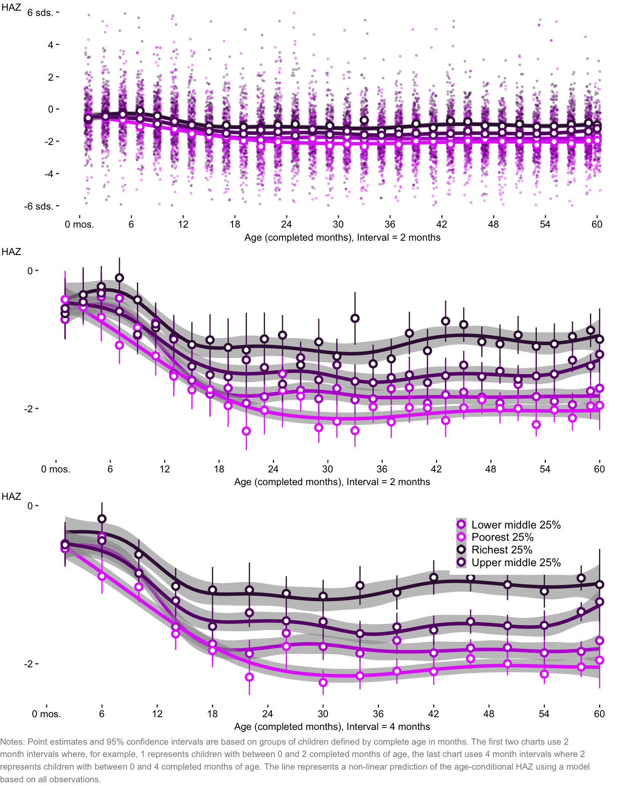

Drivers of child stunting in the Philippines
Introduction
Despite recent economic growth, increased health spending and improved coverage of key health interventions, the Philippines continues to struggle with persistently high child undernutrition. If current conditions persist, the Philippines can expect that close to 40% of its future workforce will have been stunted during their childhood.
While there is a general consensus on the importance of diet, health and care in driving normal early childhood development and growth, there are still unsettled questions about the relative importance of specific nutrients and interventions that can most effectively prevent chronic undernutrition. Nonetheless many low and middle income countries are making rapid progress against stunting. In Peru, for example, rapid improvements in child nutrition were underpinned by political commitment, a focus on evidence and results and behavior change preceded by greater understanding and awareness by parents about the impact of child undernutrition which had been, for many years, an invisble problem 1. In the Philippines, stunting is becoming a more salient political issue, and the government’s nutrition strategy, the Philippine Plan of Action for Nutrition2, sets out an ambitious target of reducing stunting to 20 percent by 2022.
While the Philippines has an excellent survey program that routinely monitors the nutritional status of children, there is limited published empirical evidence on the size, direction, interdependence and relative importance of stunting’s risk factors and interventions. The objective of this paper is to help fill that knowledge gap by conducting a systematic analysis of the drivers of stunting, identifying likely pathways for effective interventions to promote early growth and thereby strengthen the evidence base on which nutrition policy and interventions are determined as the Philippines sets out to reduce child stunting in the next four years.
The individual and social costs of stunting
For individuals, undernutrition in utero and early childhood has severe short- and long-term consequences. Childhood undernutrition is associated with increased risks of morbidity, mortality and cognitive deficits3. Longitudinal studies show links between childhood undernutrition and reduced schooling, learning outcomes and economic productivity as an adult. For example, in the Philippines, children in the Cebu longitudinal health and nutrition study who were stunted between birth and age 2 were found to have lower cognitive test scores at the age of 8 and 11 years, associated with delayed enrollment in school, higher absenteeism and repetition of grades4.
There is growing evidence that cognitive, motor and socio-emotional deficits in early childhood, as well as schooling and learning outcomes later in life are mediated through the brain’s architecture as it develops in an environment cut-off from adequate nutrition, stimulation and care. The vast majority of neural development occurs between conception and infancy and the neural circuits that underpin key functions such as seeing and hearing, speech production and higher cognitive ability are established before the age of two5. Key processes such as the creation of neurons, the growth of axons and dendrites, synapse formation and pruning as well as myelination are dependent on key micronutrients6. New studies that use neuroimaging technologies to measure brain size and structure show alarming differences in brain architecture associated with chronic malnutrition and sensory deprivation . Preliminary findings based on brain scans of stunted and never stunted children between the ages of 2 and 3 months in Bangladesh show that stunted infants have a lower volume of overall brain tissue, gray matter and white matter compared to never stunted infants7.
For a society, widespread childhood undernutrition is linked to economic growth through reduced human capital investments (educational attainment), reduced labor supply and productivity (through early mortality, ill-health and cognitive capacity) and reduced physical capital investment (if savings are diverted to cope with the increased burden of chronic diseases)8. Recent studies suggest that the total costs of childhood undernutrition in the Philippines is in the range of 1.5 to 3% of GDP per year 9, 10.
Stunting levels and trends globally and in the Philippines
Undernutrition slows the linear growth of children beginning in utero. The timing and pattern of growth faltering that follows birth is well established. In low and middle income countries (LMICs) height for age z-scores (HAZ) decline soon after birth reaching a nadir of around -1.75 to -2 standard deviations (SDs) at 2 years of age. There is little, if any subsequent catch-up growth between 2 and 5 years of age. The key implication being that there is a very narrow window of time during which stunting is reponsive to, or preventable by, interventions11.
In the Philippines, the average height of children follows this pattern and begins to fall rapidly relative to the World Health Organization (WHO) child growth standards12 at around 6 months of age . For example, at the age of 6 months the mean height of Filipino boys is 66.7 cm, 0.9 cm (or 0.78 SDs) below the WHO median. By the age of 18 months, Filipino boys are about 3.8 cm (or 1.55 SDs) shorter than the WHO median and by the age of 5, they are 7.5 cm (1.65 SDs) shorter . Starting at about 12 months of age, the average Filipino boy and girl is shorter than the shortest 15 percent of healthy children in the WHO’s reference population.
One important measure of the burden of severe undernutrition at a population level, is the share of children that are stunted. Stunted children are more than two standard deviations shorter than the WHO median for their exact age and gender. Globally 1 in 5 children under the age of 5 (151 million) are stunted. While the scale of child undernutrition remains vast, progress is being made. Between 2000 and 2017, global stunting rates fell from 32.6 to 22.2 percent13. A number of countries with stunting prevalence higher than 25 percent in 2000 made remarkable progress. For example, stunting prevalence in Mongolia, Ghana, Cote D’Ivoire, Peru and Bolivia fell by over 5 percent per year on average with an overall reduction in stunting of between 64 percent (Mongolia) and 47 percent (Ghana).
In the Philippines, 1 in 3 children under the age of 5 (3.8 million) are stunted, placing it fifth among countries in the East Asia & Pacific region with the highest stunting prevalence, and among the 10 countries globally with the highest number of stunted children . While stunting prevalence fell from 44.7 to 33.8 percent between 1987 and 2003, no progress was made in the ensuing 13 years . Philippines is not a regional anomaly in this regard. Malaysia’s stunting rate has persisted at 20.7 percent since 1999 and Indonesia’s stunting rate only marginally declined at an annual rate of 0.5 percent per year - from 41.6 in 2001 to 36.4 percent in 2013. Ten of 13 countries in South or South East Asia with stunting levels higher than 25 percent in 2000, still have stunting rates higher than 25 percent today. A few countries in the region such as China, Vietnam and Cambodia – have managed to sustain steady declines in stunting at rates of 6.7 (1987-2013), 3.8 (1998 - 2015) and 2.8 (1996-2014) percent per year, respectively.
The variation in stunting across countries and between population groups within countries highlights the importance of socio-economic factors in child nutrition outcomes . In the Philippines, under-5 children in families with incomes that rank among the poorest 20% nationally are more than twice as likely to be stunted than children from the richest 20% of families. That said, it is important to note that even among families with incomes in the top fifth of the distribution stunting prevalence is still common, with almost 1 in 5 children from these families who are stunted. Globally, average stunting rates tend to decline as countries get richer , but the relationship is very weak, suggesting the key role that policy decisions and other social factors play in the evolution of stunting over time. Among countries that sustained average real GDP per capita growth rates in the range of 4 percent since 2000, for example, some countries such as Paraguay and Kazakhstan had stunting rates decline by over 7 percent per year, while others, like the Philippines saw no or very small changes in stunting rates.
Stunting in the Philippines follows an age and sex pattern that mirrors average height-for-age z-scores . In the first six month of life, stunting prevalence is around 12 percent for both girls and boys. Between 6 and 18 months of age, linear growth in boys falters faster than among girls such that stunting prevalence is 29 percent for boys and 20 percent for girls in this period. While linear growth does not continue to falter for boys after 18 months, it does for girls so that between the ages of 19 and 60 months, stunting prevalence for both girls and boys is actually the same: 38 percent .
Family income is most strongly associated with stunting prevalence among children between the ages of 19 and 60 completed months and not associated with stunting prevalence among children between the ages of 0 and 5 months . Together with the fact that stunting prevalence conditional on income varies little between the ages of 19 and 60 months , these patterns suggests two things. Firstly, income influences how far linear growth falters between the ages of 6 and 18 month but high incomes do not prevent growth faltering altogether. Secondly, high income does little to reverse the growth deficits sustained between 6 and 18 months of age.
Eleven of the Philippines 17 regions have conditions that will eventually expose between 40 and 50 percent of children to stunting. These regions are concentrated in the Visayas and Mindanao island groups, representing just over half of the under-5 population and 60 percent of all stunted children under the age of 5 . At the regional level, stunting prevalence is correlated with poverty most strongly among children between the ages of 19 and 60 months of age . Across provinces, stunting prevalence among children between 18 months and 5 years of age, ranges from a low of 20 percent in Bataan province (Central Luzon region) to a high of around 64 percent in Cantanduanes province (Bicol region). Clusters of two or more provinces where more than 1 in 2 children are stunted by the age of 5 exist in ARMM, Zamboanga Peninsula, Western Visayas, Bicol, Eastern Visayas and SOCCSKSARGEN .
The drivers of stunting: overview of evidence and conceptual framework
A complex web of inter-linked factors determines the suboptimal growth and development outcomes of children. At the most immediate level, linear growth failure in the first few years of childhood is caused by pre-natal factors that affect the development of the fetus and birth outcomes; and post-natal factors that affect a child’s dietary intake and exposure to infectious disease. At the farthest end of the causal chain are the social, economic and political factors that shape the resources, opportunities and behaviors families use for child care, eating and health care 14.
Prenatal risk factors
In the prenatal period, fetal growth is governed by mother’s nutrition, endocrine and metabolic signals, and placental development. Newborn birth weight and gestational age reflect the intrauterine environment. While low birth weight (LBW, defined as < 2500g) is used as a proxy for undernutrition in utero, it really encompasses two related phenomena that have distinct underlying causes: small for gestational age (SGA)15 and preterm delivery. SGA describes a fetus that is smaller than expected for the number of weeks in pregnancy and is closely associated with fetal growth restriction (FGR). Preterm denotes live births that occur before 37 weeks of completed gestation. Filipino newborns are among the world’s most likely to be born too small or too soon. An estimated 15 percent of live births in LMICs are LBW, with LBW prevalence highest in South Asia (25.6 percent), Sub-Saharan Africa (14.2 percent) and South-eastern Asia (12.2 percent)16. In the Philippines, the 2017 demographic and health survey (DHS)17 estimated 14.5 percent of livebirths were LBW suggesting a significant drop since 2011 when LBW prevalence was estimated at 21.4 percent. Using data from the INTERGROWTH-21st project18 a recent study examined the global prevalence and burden of small-for-gestational-age (SGA) and estimated that in 2012, 25.6 percent of Filipino newborns were SGA and that 22.7 percent of neonatal deaths were attributable to SGA (either term or preterm) placing the Philippines among the ten countries globally with the highest SGA burden 19.
Recent global and national estimates20 suggest preterm birth prevalence in the Philippines was in the range of 13.3 percent in 2014 and more than doubled since 200021. Among SGA livebirths, 7 percent (or 1.8 percent among all livebirths) were also delivered preterm. The Philippines ranks 9th globally for the share of livebirths that are preterm and 3rd for the share of livebirths that are both SGA and preterm.
Using data from 19 birth cohorts and longitudinal studies representing countries in 3 LMIC regions (including the Cebu, Philippines cohort), Chrsitian et. al. explore the relationship between SGA and preterm birth with stunting between the ages of 12 and 60 months22. The study finds that the risk of stunting associated with LBW, SGA and preterm – even when adjusting for characteristics of the mother - is significantly elevated compared to appropriate for gestational age (AGA) and term births, with the risks being compounded for births that are both SGA and preterm. For example, for birth cohorts in the Southern/Eastern Asia region, the odds ratios (ORs) for stunting associated with LBW, SGA and preterm were 2.64, 2.13 and 1.34. Babies born both SGA and preterm had an even higher odds of stunting (OR 3.63) compared to babies born AGA and term. Given that the study did not find significant variation in these associations by region, the authors consider highly plausible that the associations are biological. The combined population attributable risk for stunting from SGA was 0.16 suggesting that close to one fifth of childhood stunting could have its origins in the fetal period.
Available evidence suggests that SGA (both term and pre-term) is strongly associated with maternal height and low BMI which are in turn associated with adolescent health and pregnancy. A pooled analysis of DHS data from 109 countries adjusting for socioeconomic characteristics such as the wealth of the household and education of the mother, found a strong relationship between maternal height and stunting23: children of mothers measuring 145 cm or less had an 80.5 percent probability of being stunted, compared to 18.9 percent for children of mothers measuring 160cm or more, controlling for other factors. Other studies have established links between maternal birth outcomes – such as birthweight and SGA – with offspring outcomes including stunting. A study using the Cebu longitudinal health and nutrition survey conducted between 1983 to 1995 in the Philippines reinforces this evidence, finding that the likelihood of stunting is inversely related to mother’s height and low birth weight 24.
Risk factors for LBW include maternal anemia. A meta analysis that included 11 experimental trials identified a significant 20% reduction in the risk of LBW associated with antenatal iron supplementation 25. Risk factors for preterm births include Zinc deficiency, parity and maternal age.
[Placeholder: possibly add in NNS data on adolescent girls who are stunted, adolescent girls with low BMI, Adolescent girls with high BMI, women aged 20-24 who gave birth before the age of 18]
Postnatal risk factors
During infancy and childhood, epidemiological studies point to suboptimal complementary feeding, recurrent infections and micronutrient deficiencies as important proximal determinants of stunting. Findings from the Cebu longitudinal study, for example, show that the likelihood of stunting is increased by diarrhea, febrile respiratory infections and early supplemental feeding26. Notably, the study finds a clear risk of early weaning off of breastmilk, identifying protective effects of breast-feeding and negative effects of supplementary feeding that were strongest in the first year of life suggesting that among breast-fed infants “high quality nutrients from breast milk are replaced with lower quality nutrients from weaning diets based on corn or rice”.
The existing experimental evidence suggests that nutrient supplementation, counseling for maternal, infant and young child feeding and the promotion of complementary feeding has been marginally successful at boosting linear growth (none have been able to normalize early childhood growth) and reducing the incidence of stunting. Experimental studies on breastfeeding promotion that included nutritional status outcomes did not show any effect on the length of infants (though the beneficial impact of breastfeeding in reducing mortality risk underpins why it is strongly promoted) 27.
In response to the underwhelming effect of nutrient supplementation and counseling interventions on linear growth, three recent randomized control trials in Kenya, Bangladesh and Zimbabwe tested whether reduced exposure to pathogens in the environment are a key constraint to early growth among children. More specifically, these studies tested the hypothesis that environmental enteric dysfunction – a condition of the gut caused by fecal contamination which impairs nutrient absorption- is a key bottleneck for childhood growth, thus constraining the impact of nutrition interventions in settings with poor environmental conditions. In each of the studies, respondents were randomly assigned to receive water, sanitation, hygiene and nutrition interventions in isolation and in combination testing whether synergies across different interventions exist28. In the Kenya study, none of the interventions reduced the incidence of diarrhea and only the nutrition intervention improved the growth of children29. In the Bangladesh study all interventions reduced the incidence of diarrhea and again, only the nutrition intervention improved the growth of children, correcting one sixth of the growth deficit compared to international norms of healthy growth30. These studies were all consistent in their failure to find any effect of WSH interventions in isolation or in combination on the linear growth of children.
While not well established, there is some empirical evidence that points to the role of animal-sourced foods (ASF) in the promotion of early childhood growth. Randomized control studies in Jamaica, China and Ecuador, for example, supplemented children’s usual diets with high protein milk, minced pork and eggs and in all cases found that treated children had grown taller than the control 31. In the Ecuador study, stunting prevalance among randomly assigned children who were provided one egg per day over a 6 month period declined by 47 percent relative to the to the control group of children who followed their usual diet 32. A cluster randomized evaluation of the Philippines’ conditional cash transfer program, Pantawid Pamilyang Pilipino Program (PPP)33, found the program reduced severe stunting among children (ages of 6 and 36 months) in the treated group by 10 percentage points, relative to children in the control 34. To try and understand the possible mechanisms contributing to the large reduction in severe stunting, the study also reports the effects of Pantawid on the use of health services for children and on parenting practices, finding large impacts on the utilization of growth monitoring check-ups, vaccination and treatment for illness as well as an 8.2 percentage point (pp) increase in egg consumption and a 6.9 pp increase in dairy consumption relative to children in the control group. While utilization of child health care was a key condition to receive cash benefits, the greater exposure to nutritent rich ASFs among children participating in the program would have resulted from either the income effect of the cash transfer (relaxing budget constraints), Pantawid’s family development sessions which emphasized infant and young child feeding and nutrition, or both.
A recent observational study looking at the relationship between ASF consumption and stunting globally using DHS data finds that children between the ages of 18 and 23 months who consume 2 or 3 types of ASFs the previous day are around 6 pp less likely to be stunted compared to children who do not consume any ASFs, controlling for other child and household factors 35. In South, Central and South East (SE) Asia, 56.8 percent of children (6-23 months) consumed any ASF the prior day (compared to a high of 83 percent in Latin America & Caribbean and a low of 49.3 percent in Eastern & Southern Africa). Of the children who consumed any ASF, the vast majority (75 percent) only consumed 1 type of ASF - the highest rate across all regions - suggesting relatively low exposure to different kinds of ASFs among children in South, Central and SE Asia. High prices may be a key constraint to relatively low levels of ASF consumption. The prices per-calorie of ASFs relative to the prices per-calorie of the cheapest staple cereal in South, Central and SE Asia, range from a high of 7.8 for fresh cow’s milk to a low of 5.3 for fish; chicken eggs are 6.5 times more expensive, on average, per calorie than the cheapest staple ceral 36.
Stunting risk factor trends in the Philippines
In the Philippines, population-level trends for key pre-natal and post-natal stunting risk factors is positive and creating a more favorable environment for children . The fact that under-5, infant and neonatal mortality have all declined since 2000 at least partly reflect this.
Average living standards in the Philippines have improved markedly since 2000. GDP per person (adjusted for inflation) rose at greater than 4 percent per year in nine of the 18 years between 2000 and 2017, contributing to an overall increase in real income per capita of close to USD 1,300 over this period. Overall, the distribution of income growth since 2006 has been inclusive and pro-poor, but especially so between 2012 and 2015 when income per capita among the poorest 20% of households increased by 16 percent37. As a result, between 2006 and 2015, poverty rates estimated on the basis of the national poverty line fell from 26.6 to 21.6 percent (and from 14.5 to 6.6 using the USD 1.90 international or “extreme” poverty line).
Other risk factors or interventions closely associated with stunting that clearly improved between 2000 and 2017 and that now affect less than 25% (or cover at least 75%) of the population, include anemia prevalence among women (pregnant or lactating), anemia prevalence among children between the ages of 1 and 5 years, diarrhea prevalence among children under the age of 3, breastfeeding prevalence, the share of births assisted by a skilled health practitioner and the share of the population with access to an improved, non-shared sanitation facility.
Risk factors or interventions that improved but still affect more than 25% (or cover less than 75%) of the population include anemia prevalence in children between 6 months and 1 year of age, exclusive breastfeeding prevalence among infants between 0 and 5 months of age, and children between 6 and 23 months of age receiving a diverse or acceptable diet38.
Amidst these positive trends are a few key areas of concern, some of which were pointed out previously. Adolescent fertility and childbearing prevalence are on the rise. Preterm births are estimated to have more than doubled since 200039 and DHS surveys conducted between 1993 and 2015 found that LBW prevalence (among all livebirths in the 5 years preceding the survey) increased from 14.7 to 21.4 percent. However, the most recent DHS estimate from 2017 found LBW prevalence to have fallen significantly to 14.5 percent. Estimates from the NNS of the share of children under the age of 4 whose mother reported (with or without a written record) a low birth weight was 15.9 percent in 2011, 11.1 percent in 2013, and 14.5 percent in 201540. While not deteriorating, a measure of maternal nutrition used by the FIES in its last three NNS reports - the percentage of pregnant women who are ‘nutritionally-at-risk’ - has not improved. In 2011, 2013 and 2015, around 1 in 4 pregnant women were estimated to be nutritionally-at-risk. Further, in 2015, pregnant women under the age of 20 were were twice as likely to be nutritionally-at-risk than women above the age of 20 (39.6 vs. 21.9 percent). The relative risk of having deficient nutrition during pregnancy associated with adolescent age is greater than the risk associated with wealth.
Coverage of all 8 basic vaccinations according to the government’s vaccination schedule slipped from 79 to 71 percent between 2000 and 2003 and has remained around that level since.
The overall child nutrition picture in the Philippines presents a puzzle. Why did the country’s stunting rates stagnate between 2000 and 2015 amidst improving living standards, improved child survival, expanding coverage of key health interventions, the implementation of a targeted cash transfer scheme and sustained progress against stunting elsewhere in the region?
Certainly, examination of trends in some key risk factors provides some clues. For example, combined with the fact that adolescent fertility is increasing, lower nutritional status among pregnant adolescents is a major headwind for child nutrition even as economic conditions improve. Closely associated is the rise of preterm birth and low birth weight prevalence, which signals a broader challenge with maternal health and nutrition. In addition, given that preterm births also face a significantly higher risk of neonatal mortality41, one implication of rising preterm birth rates in a context of improving care for vulnerable neonates – which appears to be the case in the Philippines – is that as more preterm newborns survive past the first 30 days of life, the composition of children at older ages will include a larger share who are at a greater risk of stunting.
It is not clear how important these factors are in the Philippines overall stunting story. A major objective of the sections that follow is to more precisely identify which pathways seem to drive stunting through an empirical assessment of the relationship between stunting and its known risk factors.
Data & methods
Conceptual framework
The underlying environmental conditions and risk factors that influence stunting in the ante-natal and post-natal period can be grouped into five categories : (1) maternal anthropometry, health and nutrition (such as whether a pregnant women is stunted or has anemia) and birth outcomes, (2) the care and feeding practices that a child receives at home (such as breastfeeding and timely transition to complementary foods), (3) the degree of household food security and access to diverse foods, (4) the ability of the household to prevent transmission of infectious disease with adequate, water, sanitation and hygiene (WSH) infrastructure and (5) the utilization of child health care services, technologies and interventions to prevent disease and boost nutrition. While building off of the original UNICEF conceptual framework, this categorization, and the analysess that follows also draw on two recent reports by the World Bank examining the drivers of stunting in Indonesia and across Sub-Saharan Africa.
The multiplicity and interlinked nature of stunting’s potential causal pathways carries at least three implications. The first, is that the specific factors that most heavily influence growth failure in one context, may not prevail in another. For example, stunting among children in poor, low-lying coastal neighborhoods affected by floodwater may be in large part caused by increased exposure to infectious disease in a setting without adequate WSH infrastructure. Whereas in neighboorhoods without flood risk and good WSH infrastructure stunting may prevail due to inadequate dietary diversity caused by the high prices or limited supply of nutritious foods. The second implication, is that presence of one driver (such as exclusive breastfeeding) may not necessarily prevent stunting without the presence of another driver (for example, if the mix of complementary foods introduced at 6 months inadequately meets the caloric needs of the child). In other words, there may be a subset of drivers that are strictly necessary for healthy growth that cannot be substituted for by the presence of other drivers. The third implication, is that stunting is cyclical. Several studies have established a link between maternal anthropometry – such as the birthweight, SGA status and height of the mother – with offspring outcomes including stunting. Some frameworks make the cyclical nature of stunting explicit and suggest that making sustained progress against stunting requires interrupting its intergenerational causal pathways 42.
Data
The analysis in this report relies on the nationally representative 2015 National Nutrition Survey (NNS) conducted by the Department of Science and Technology’s Food and Nutrition Research Institute (DOST-FNRI). The 2015 NNS is an ‘updating’ survey meaning that it was implemented in the years intervening the more comprehensive NNS surveys which are conducted every 5 years. The 2015 NNS collected data across 9 topic areas: Anthropometry, clinical and health, dietary, socioeconomic, food security, government nutrition and health program participation, maternal health and nutrition, infant and young child feeding and MDG health related outcomes. For the analyses in this report, 10 NNS modules made available from DOST-FNRI were used , representing 42,310 households and 202,570 household members. Data on household income and consumption from the 2015 Family Income & Expenditure Survey (FIES) is also used given that households in the 2015 FIES can be matcehd to the 2015 NNS, since both samples use the same sampling frame.
The NNS anthropometry module contains data on 18,629 children spanning the ages of 0 and 1856 completed days of age (60.9 months) which can be matched to the WHO’s international growth standards reference table. However for 8.7 percent of these cases, height measurements are missing, leaving 17,014 children for whom height-for-age z-scores (HAZ) can be computed43. Of these children, 141 had biologically implausible z-scores (> 6 sds or < -6 sds), leaving 16,873 children under the age of 61 months with valid HAZ measurements (#tab-anthro).
Given that different modules of the NNS focus on specific segments of the population, there is a trade-off between the scope of nutrition drivers included and the size and age-composition of the sample considered in the analysis . For example, in total 16,873 children have valid HAZ scores in the NNS and while all of these children are represented in each of the household-level modules of the NNS (Form 1.2, Form 1.5 and Form 1.6), only 10,188 (around 60 percent) are represented in Form 3.1 which captures variables on maternal health care and only 5,945 (around 35 percent) are captured in Form 4.3 which captured data on infant and young child feeding practices for children under the age of 2. If data from the FIES is matched to the NNS sample, a total of 4,049 children with valid z-scores (all under the age of 2 years due to the inclusion criteria of Form 3.1) have information from all of the available NNS and FIES modules. There is no evidence that factors that influence stunting other than age are being affected as a result of inclusion/exclusion criteria of the different NNS modules as the unweighted stunting rates for children under the age of 24 completed months do not vary with the sample size.
Pre-natal environment: Measures of maternal health, nutrition & care
Given extensive evidence about the importance of the pre-natal environment for subsequent child nutrition and health outcomes, a set of 10 indicators that are proxies for the likely nutritional status of the mother during pregnancy as well as the health care services that were available to - and used by - mothers during their pregnancy were identified in the NNS . Of these, five are considered necessary evidence for an adequate pre-natal environment for the child: normal birthweight (greater than or equal to 2.5kg)44, maternal height above 145 cm, mother’s BMI > 18.5 and at least four prenatal visits and birth assistance during delivery. Three additional ideal measures in this domain that were not available in the data include whether the child was born preterm, whether the child was born small for gestational age and whether the mother had anemia while she was pregnant.
Indications of low maternal nutritional and health status during pregnancy (low birth weight of child during birth, maternal short stature and low BMI) is evident in 11 to 14 percent of children under the age of 2, and is most strongly associated with mother’s education and family income. For example, the prevalence of maternal short stature is 18 percent among children whose mothers completed elementary school at most, compared to 12 percent of children whose mothers went to college. The association of educational attainment and maternal short stature is even greater. The prevalence of low BMI is most weakly associated with income and mother’s education.
Nationally, the utilization of antental health care and care during delivery, is common. The mothers of over 80 percent of children under-2 attended at least four antenatal visits and 85 percent received assistance during delivery by a skilled practitioner. Disparities in maternal pre-natal care associated with income and education, however, are very high. For example, while 95 percent of mothers with college education had skilled assistance during delivery, only 62 percent of mothers with elementary education or less had skilled assistance.
Overall, 57 percent of children under-2, have strong evidence of an adequate antenatal environment leading up to their birth. Children in the richest income quartile are about 1.5 times as likely to have adequate prenatal conditions than children in the poorest income quartile. Children whose mothers have college education are 1.6 times as likely to have adequate prenatal conditions then children whose mothers had at most an elementary education.
Measures of childcare & feeding practices at home
Early childhood nutritional intake is directly dependent on the feeding practices adopted by parents in the home, including whether mothers decide to breastfeed, for how long, and for older children, what kinds of solid foods are given, how frequently and how diverse are they. The WHO recommends exclusive breastfeeding for children between the ages of 0 and 5 completed months of age, the introduction of solid or semi-solid foods between the ages of 6 and 8 completed months and continued breastfeeding along with complementary foods through 2 years of age. The WHO also has guidelines on dietary frequency and diversity for children above the age of 6 months. Other important and related aspects of child care in the home include the hygienic preparation of food and whether the child receives cognitive stimulation. A set of six indicators were identified in the NNS data that map to childcare and feeding practices at home, of these three are considered necessary evidence of an adequate child care and feeding environment at home: the child is age-appropriately breastfed according to WHO standards, the child is read to and played with, and the mother always handwashes before food preparation and feeding, before and after eating and after toilet use . Three ideal indicators of child feeding practices that were not available for this study include minimum meal frequency, minimum dietary diversity and minimum acceptable diet for children 6 months and older.
Good hygiene habits are quite common, 4 in 5 children under-2 have mothers who report always handwashing before and after food handling and toilet use, with only minor differences associated with family income or education. In contrast, only 39 percent of children are read to and played with by the caretaker, with moderate differences associated with family income and the mother’s education. Less than 1 in 2 children under-2 are appropriately fed for their age. Age appropriate feeding is the only positive indicator that is negatively associated with family income and mother’s education. For example, children under-2 from the poorest quartile are nearly twice as likely to be fed appropriately for their age than children from the richest quintile. The reason is that women in higher earning households are less likely to breastfeed and more likely to use breast-milk substitutes. Overall, 16 percent of children under-2 are in a home environment which provides good hygiene, cognitive stimulation and WHO recommended breast- and complementary- feeding practices, with very little difference associated with family income or mother’s education.
A closer examination of the age-profile of different infant and young child feeding practices reveals that women with elementary educational attainment or less (EE) are increasingly more likely to be breastfeeding their child compared to women with college education (CE) as the child gets older. For example, in the first two months of life, children of EE women are 16 percent more likely to be breastfed compared to children of CE women. At just over a year old, children of EE women are 66 percent more likely to be breastfed compared to children of CE women. EE women are both more likely to breastfeed and breastfeed for longer than CE women. The same is true for exclusive breastfeeding, though by 8 months of age, very few children are still exclusively breastfed. EE women are also more likely to introduce complementary foods earlier than CE women. For example, between the age of 4 and 6 completed months, 29 percent of children of EE women are being fed solid or semi-solid foods, compared to 18 percent of CE women. As CE women transition away from breastfeeding, not only do they introduce complementary foods, they also introduce breastmilk substitutes, such that by the age of 2, almost all children of CE mothers are drinking milk of any kind, whereas the proportion of children of EE women near the age of 2 drinking milk of any kind is only 69 percent.
Household food security & diversity
Another key factor shaping the nutritional environment that children are exposed to is the degree to which the household experiences food insecurity and the range of foods the the family has access to and consumes regularly. A set of 18 indicators were identified in the NNS and FIES surveys that measure household food security and diversity . Of these, two are considered necessary evidence of adequate household food security and diversity conditions: the household is food secure based on its Household Food Insecurity Access (HFIAS) status and the household consumed protein rich foods (meat and eggs and milk) at least once in the past 7 days. A status of food secure based on the HFIAS methodology, means that the household does not frequently worry about having enough food, does not give up on preferred foods or cut back on quantity by reducing meal size or number of meals an does not run out of food, go to bed hungry or go a whole day or night without eating.
Compared to other groups of factors associated with childhood undernutrition, indicators of household food security and food diversity have the greatest differences associated with family income and mother’s education. Overall 1 in 5 children under-2 live in food secure households, and children in the richest quartile are four times as likely to be food secure than children in the poorest quartile. Children in the richest quartile are also nearly twice as likely to live in households with access to a greater diversity of foods compared to children in the poorest quartile. Household access to animal product protein is even more strongly associated with income: 70 percent of children under-2 among the richest quartile are in households that consumed protein rich foods in the past week, compared to only 30 percent of children in the poorest quartile. Even fewer children under-2, less than 5 percent in the poorest two deciles, live in households that regularly consume protein-rich food sources (from meat, eggs and milk, at least 3 times in the past week) compared to over 30 percent in the richest two deciles . The average number of times weekly that the poorest 25% of households consume milk or milk products is 2.8, comopared to 4.7 times for the richest 25% of households. For eggs, the difference is 2.1 versus 3.6 times per week among the poorest 25% and richest 25% respectively, and for meat, the difference is 1.1. versus 2.9 .
Nationally, only 15 percent of of children under-2 are in an environment that provides secure access to food over time and some degree of nutritional diversity. Children from the richest families are seven times as likely to have adequate food security and diversity compared to children from the poorest families. The difference is of a similar magnitude with respect to mother’s education and not very substantial between urban and rural areas.
Post-natal maternal & child utilization of healthcare
The post-natal health and well-being of the mother and child are important factors that enable childhood nutrition. A set of 8 indicators from the NNS survey were identified as measures of post-natal maternal and child health care, of which three are considered necessary evidence of adequate health care : the mother received a post-natal check-up after birth by a skilled practitioner, the child underwent neonatal screening and the child received vaccinations according to the recommended WHO age-schedule: BCG, oral polio, DPT (or pentavalent) and measles[^vaccines].
Nationally, skilled postnatal care for the mother, neonatal screening and up to date vaccinations, cover 78, 64 and 67 percent of the target population. With the exception of vaccinations, differences in coverage associated with family income and maternal education are wide. For example, 83 percent of children in the richest quartile underwent neonatal screening shortly after birth, compared to 46 percent of children in the poorest quartile. About 40 percent of children under-2 nationally show evidence of having access to all three sub-indicator of post-natal care. While differences in coverage of adequate post-natal care associated with income and mother’s education are wide, it is not significant between urban and rural areas.
Household environment: Water, sanitation & hygiene infrastructure
Whether a child comes into contact with infectious diseases or other environmental pathogens is partly determined by the conditions of the dwelling and of the surrounding community. A set of 6 indicators from the NNS were identified as measures of the sanitary and hygienic conditions of the household, of which three are considered necessary evidence of adequate WSH conditions for the child : the household uses drinking water from an improved source, the household uses a toilet facility that is water sealed and at least 75% of households in the municipality have improved sanitation.
Access to improved WSH infrastructure is in general very high: 95 percent of children under-2 have access to improved drinking water, 85 percent have access to improved sanitation and 82 percent live in a municipality where at least three quarters of the households have improved sanitation. Nationally, close to 3 in 4 children under-2 live in a household with adequate WSH infrastructure.
Several indicators associated with the household environment but not related to water and sanitation were identified in the NNS data. Whether the household has access to electricity or uses improved cooking fuel and does not burn garbage has a bearing on indoor air quality, and how efficiently food can be prepared. Whether there is a functioninig refrigerator has a bearing on the household’s ability to preserve foods that are prone to spoilage, including meat, eggs, animal milk, and breastmilk. Nationally, only about 1 in 3 children under that age of 2 live in households that use improved cooking fuels and or have a functioning refrigerator. Use of improved cooking fuel and refrigerator ownership is even lower for the poorest quartile, 5 and 8 percent, respectively, compared to 52 and 72 percent for the richest quartile. And of all the indicators considered, the urban-rural difference is largest for the use of improved cooking fuel: Urban households are five times as likely to burn cleaner fuels for cooking than rural households. Given the lack of evidence of the impact of these resources on child undernutrition, they are omitted from the overall measure of access to an adequate household environment, but are explored independently in the analyses.
Resources for food security, home care & health care
A women’s ability to access sufficient nutrition and health care prior-to, during and after pregnancy; provide sufficient food and care for her child and a housing envrionment that facilitates hygiene, requires financial, social and knowledge resources. Several measures from the NNS that capture the resources available to families for child care, nutrition and health were identified . Measures that proxy for the level of social support and time available for caretaking are mixed. Nationally 55 percent of children under-2 have married mothers which implies a relatively high share of children who live with a single parent . Additional assitance for childcare is prevalent. Over 8 in 10 mothers reporting they get help with childcare duties, with little differences associated with family income, education or the urban/rural context of the household. Children in the poorest 25% of households are about half as likely have mothers who work or run a business compared to children in the richest 25% of households. Children under-2 in poorer, rural households or whose mothers have little formal education are more likelty to receive assistance from the government’s conditional cash transfer (CCT). Overall levels of educational attainmnent among mother’s is quite high. Over 8 in 10 children have mothers with some high school or tertiary education. Knowledge of breastfeeding “best practices” is mixed. Nearly 1 in 5 children whose mothers have relatively little formal education believe children should be exclusively breastfed for less than 6 months and nationally, nearly 1 in 3 children have mothers who believe exclusive breastfeeding should extend beyond 6 months. Average household income per month in 2015 was PHP 20,047 (USD 440) nationally, PHP 6,006 (USD 132) among the poorest 25% and PHP 46,165 (USD 1,014) among the richest 25%. Urban household incomes were about 45 percent higher than rural household incomes. The differences between total household incomes and household expenditure per month also point to the greater ability of richer households to save and the greater propensity for poorer housheolds to borrow. For example, while the average total household expenditure among the poorest 25% is 12 percent higher than average total income, average total expenditure is 34 percent lower than total income among the richest 25%.
Stunting and simultaneous access to drivers of nutrition
Across the five nutrition driver categories, access to adequate care and feeding at home, and adequate household food security & diversity are the least common among children under-2, and therefore act as an upper-limit on the proportion of children that have simultaneous access to all drivers . The likelihood of simultenous access to nutrition drivers is strongly associated with family income. For example, 59 percent of children under-2 in the richest quartile have adequate access to 3 or more drivers, compared to only 25 percent of children in the poorest quartile. Only 11 percent of children nationally have access to any 4 or 5 drivers, with children in richer housheolds 4 times as likely to have access to 4 or 5.
Simultaneous access to the composite nutrition drivers is correlated with stunting . Children without access to any of the nutrition drivers are more than twice as likely to be stunted compared to children with access to 4 or 5 of the nutrition drivers both among the richest and poorest half of the population.
Results
Four types of analyses to model the association of nutrition drivers with stunting are explored in this section. The first uses a reduced set of the most proximal stunting factors available in the data with the primary aim of gauging which of the three broad causal pathways (pre-natal, post-natal nutrition, post-natal health) are most strongly assoicated with stunting. The second analysis incorporates a broader and more distal set of factors in order to provide a more detailed picture of the specific risk factors and interventions which are associated with stunting in the Philippines. The third analysis assesses the association of stunting with the composite indicators of adequate access to the five nutrition driver categories, while the fourth analysis explores whether there are synergies between the different domains of nutrition drivers in their effect on stunting. While all analyses control for biological factors of the child (age, sex and twin status), the results are presented separately for regressions that adjust for additional socio-ecoomic and demographic characteristics (household size, number of children, household income, mother’s education, occupational status, marital status and the mother’s age when the child was born) and those that do not. All models account for the clustering of children by primary sampling units. Results are presented as changes in the risk of stunting (relative to 1).
The first model (model 1) draws on data from 4,364 children under the age of 2. For the three broad causal pathways relating to pre-natal nutrition, post-natal nutrition and post-natal health, four indicators are included. Low birth-weight and whether the child had acute diarrhea in the past are outcome measures which proxy the child’s pre-natal nutritional status and post-natal health status. The other two, whether the child is breast-fed and gets energy from solid, semi-solid foods or breastmilk substitiutes relates to the child’s nutritional status. These two indicators are interacted with whether the child is below 6 months of age to capture exclusive breastfeeding and early intake of complementary foods.
The direction and magnitude of the effect of each of the predictors is consistent in both the unadjusted and adjusted model with the breastfeeding and energy intake predictors measured more precisely (with lower standard errors) in the adjusted model. Children with low birth weight have 1.7 times the risk of stunting compared to children with a normal birth weight. Using the results of this model, LBW children have a predicted probability45 of stunting of 36 percent compared to 19 percent among normal birth weight children . While breastfeeding is associated with an increased risk of stunting, exclusive breastfeeding among children up to the age of 6 months is associated with a decreased risk of stunting. Energy intake from other foods is negatively associated with stunting, but positively associated among children below the age of 6 months (though the standard error of this estimate is so large that the effect is not statistically significant). Diarrhea is not independently associated with stunting either in the adjusted or unadjusted model. Among the socio-economic predictors, mother’s education is most strongly associated with stunting. Children whose mothers have high school or tertiary education have 0.79 times the risk of stunting compared with children whose mother’s have less than high school education. To help interpret the results of the infant and young child feeding practice predictors, a simple simulation was run (using estimates from the adjusted model) to predict the probability of stunting at the age of 2 for three hypothetical children that experience different feeding regimes. The first hypothetical 2 year old child is not breastfed at all and gets energy from other sources through 2 years of age. This child has a predicted probability of stunting of 44 percent. The second is breast-fed through 2 years of age (exclusively for the first 6 months) and introduced to other foods or milk starting at 6 months of age. This child has a predicted probability of stunting of 24 percent. The third child is exclusively breastfed but transitions completely to solid foods or milk after 6 months of age (ie is not breastfed after 6 months of age). This child has a predicted probability of stunting of 16 percent .
The unexpected finding which becomes cleare with this simulation, is the negative association of breastfeeding with stunting past the age of 6 months. As observed earlier, breastfeeding is negatively associated with family income and mother’s education, reflecting the preference among mothers with more financial resources and education not to breastfeed, so one might expect that in a model that does not control for income or education, for the effect of breastfeeding to be confounded with low income or poverty. The fact that breastfeeding remains negatively associated with stunting, even after controling for income and mother’s education is surprising. This suggests that greater data is needed to untangle the factors associated with breastfeeding that aren’t fully captured by income. In other words, perhaps the effect that is detected here is not so much about breastfeeding, but about knowledge and the feeding practices among non-breastfeeding mothers, such as the quality or quantity of the diets they give their children.
The second model (model 2) incorporates several additional indciators. In the domain of prenatal nutrition, the mother’s short stature (height < 145 cm) and low BMI status is included, as well as the mother’s utilization of least 4 antenatal care visits during her pregnancy and whether the delivery of the child was assited by a skilled practitioner. In the domain of postnatal nutrition, in addition to the infant and young child feeding practice indicators explored in model 1, whether the household is food secure and consumed protein rich foods at least once in the past week is incorporated. In the domain of post-natal health, in lieu of acute diarrhea incidence, all of the post-natal health-care and WSH measures, discussed previously, are incorporated in addition to three measures relating to air quality and the ability of the household to refrigerate foods.
As with model 1, the direction and magnitude of the effect of the predictors is consistent in both the unadjusted and adjusted models . In model 2, with the exception of the number of children under 5 in the household, none of the socio-economic control variables, including income, are statistically significant in their association with stunting, suggesting that the effect of these variables is transmitted mostly through the health and nutrition drivers.
While most of the effects from model 1 relating to low birth weight, breastfeeding and supplementary feeding are consistent in model 2, a few important findings emerge. Maternal short stature has an association with stunting that is as strong as LBW. Children whose mothers have short stature have 1.65 times the risk of stunting compared to mothers with normal height (or a predicted probability of stunting of 35 versus 18 percent). Low BMI status of the mother also increases the risk of stunting, though the effect is less than half the size as LBW and maternal height. Children with access to improved drinking water at home have 0.74 times the risk of stunting as children without access to improved drinking water but improved santiation is not associated with stunting. Children in households with a functioning refrigerator have 0.8 times the risk of stunting as children without refrigeration at home.
Stunting is as much about faltering brain development as it is about faltering height.
Source: World Development Report 2018
The average attained height of children under the age of 5 in the Philippines begins to noticeably diverge from WHO standards at the age of 6 months. The total difference in height between Filipino children and the WHO’s healthy reference reaches 7cm by the age of 5.
On average, Filipino newborns are about 0.5 standard deviations (SDs) shorter than WHO’s international norm of healthy length. This gap rises to a maximum of 1.75 SDs for boys just before 18 months of age and for girls at around 36 months of age, with most of the growth slowdown occurring between the age of 6 and 18 months.
1 in 3 children under the age of five are stunted in the Philippines, 50 percent higher than the global average & just below the average for low income countries.
A number of countries from a variety of regions and income levels that had high levels of stunting in 2000 have been able to rapidly reduce stunting prevalence since. In contrast, countries in South and Southeast Asia are making much slower progress.
The large differences in stunting associated with income both across and within countries highlights the importance of socioeconomic factors in determining nutrition outcomes for children.

Declines in stunting tend to go hand in hand with economic growth, but high rates of economic growth do not guarantee progress on child nutrition, signaling the important role of public policy and other social factors.

Stunting prevalence rises most rapidly between the ages of 6 and 18 months and does not reverse in later ages. As a result, stunting prevalance among children between 19 and 60 months of age provides a more complete indication of the burden of malnutrition in the Philippines.
Inequalities in stunting associated with income, education and household residence only manifest after 6 months of age and are largest after the age of 18 months.
Stunting prevalence rises with age for children in families from all income quartiles and begins to statistically diverge according to income at around 12 months of age.
Family income is most strongly associated with stunting among children between the age of 19 and 60 completed months, suggesting that income is most effective at slowing declines in the velocity of linear growth only after infancy.
11 of Philippines 17 regions have conditions that will eventually expose between 40 and 50 percent of children to stunting. These regions are concentrated in the Visayas and Mindanao island groups, representing just over half of the under-5 population and 60 percent of all stunted children under the age of 5.
The association between regional stunting prevalance and poverty is strongest among children between the ages of 19 and 60 months of age.
Across provinces, stunting prevalence among children between 18 months and 5 years of age, ranges from a low of 20 percent in Bataan province (Central Luzon region) to a high of around 64 percent in Cantanduanes province (Bicol region). Clusters of two or more provinces where more than 1 in 2 children are stunted by the age of 5 exist in ARMM, Zamboanga Peninsula, Western Visayas, Bicol, Eastern Visayas and SOCCSKSARGEN.

Stunting is related to multiple and inter-linked causal pathways and risk factors.

With the exception of adolescent fertility and preterm birth, many conditions that favor child nutrition are improving.
Stunting is cyclical because women who were themselves stunted in childhood tend to have stunted children, interventions in the first 1,000 days have the greatest power to interrupt that cycle
Source: Adapted from Prendergast et. al 46
Datasets, modules and sample sizes available for study
View large| Dataset/module | Topic | Observations |
|---|---|---|
| 2015 Family Income & Expenditure Survey (FIES): 1st semester: Households | Household income & expenditure | 43882 |
| 2015 National Nutrition Survey: Form 1.1: Household members (all ages) | Household membership & demographics | 202570 |
| 2015 National Nutrition Survey: Form 1.1: Household members (fathers) | Household membership & demographics | 28140 |
| 2015 National Nutrition Survey: Form 1.1: Household members (mothers) | Household membership & demographics | 31654 |
| 2015 National Nutrition Survey: Form 1.2: Households | Housing characteristics | 42310 |
| 2015 National Nutrition Survey: Form 1.3: Households | Participation of households in government CCT | 42310 |
| 2015 National Nutrition Survey: Form 1.5: Households | Household food security | 42310 |
| 2015 National Nutrition Survey: Form 1.6: Households | Household dietary diversity | 42310 |
| 2015 National Nutrition Survey: Form 2.1: Anthropometry (children < 61 months) | Anthropometry | 18629 |
| 2015 National Nutrition Survey: Form 2.1: Anthropometry (fathers) | Anthropometry | 28140 |
| 2015 National Nutrition Survey: Form 2.1: Anthropometry (mothers) | Anthropometry | 31654 |
| 2015 National Nutrition Survey: Form 3.1: Mothers & pregnant women with children | Maternal health & nutrition | 8568 |
| 2015 National Nutrition Survey: Form 4.1: Children (0-71 months) | Birthweight and related information | 20303 |
| 2015 National Nutrition Survey: Form 4.2: Children (0-71 mos) | Participation of children in government programs | 22332 |
| 2015 National Nutrition Survey: Form 4.3: Children (0-23 mos) | Infant & young child feeding practices | 6653 |
Anthropometry module
| Data | Children under 61 months of age | Children under 61 months of age with height measurement | Children under 61 months of age with height measurement & biologically plausible height for age z-scores | Children under 61 months of age with height measurement & biologically plausible height for age z-scores & in the 2015 FIES |
| Observations (unique individuals) | 18,629 | 17,014 | 16,873 | 13,172 |
| Females (%) | 48.3 | 48.4 | 48.4 | 48.7 |
| Males (%) | 51.7 | 51.6 | 51.6 | 51.3 |
| Urban (%) | 33.6 | 33.4 | 33.4 | 31.5 |
| Cases with missing age (%) | 0 | 0 | 0 | 0 |
| Age range (completed months) | 0-60 | 0-60 | 0-60 | 0-60 |
| Mean age (completed months) | 32 | 32 | 32 | 32 |
| Median age (completed months | 33 | 33 | 33 | 33 |
| Cases with missing height (%) | 8.7 | 0 | 0 | 0 |
| Height range (cm) | 24.5-144.55 | 24.5-144.55 | 41.9-131.45 | 41.9-131.45 |
| Mean height (cm) | 85.2 | 85.2 | 85.3 | 85.3 |
| Median height (cm) | 86.9 | 86.9 | 87 | 87.1 |
Representation across datasets and NNS modules
Antenatal environment & maternal health care
| Category | Dataset | Driver | Definition | Available in NNS dataset | Required for adequacy in domain? |
|---|---|---|---|---|---|
| Birth outcomes | NNS Form 1.6 | Low birth weight | Child weighted less than 2.5kg at birth | Yes | Yes |
| Maternal nutrition | NNS Form 2.1 | Short maternal stature | Mother’s height is less than 145 cm | Yes | Yes |
| Maternal nutrition | NNS Form 2.1 | Mother has low BMI (underweight) | Mother’s BMI is less than 18.5 | Yes | Yes |
| Birth outcomes | Not in questionnaire | Preterm delivery | Child is born before 37 weeks of completed gestation | No | No |
| Birth outcomes | Not in questionnaire | Small for gestational age | Chld is as smaller than the 10th centile for fetal growth. | No | No |
| Maternal nutrition | Not in questionnaire | Maternal anemia | NA | No | No |
| Utilization of antenatal maternal health care | NNS Form 3.1 | Use of prenatal services | At least four prenatal visits | Yes | Yes |
| Utilization of antenatal maternal health care | NNS Form 3.1 | Neonatal tetanus | Received tetanus toxoid during prenatal visit | Yes | No |
| Utilization of antenatal maternal health care | NNS Form 3.1 | Prenatal nutrition counseling | Received nutrition counseling during prenatal visit | Yes | No |
| Utilization of antenatal maternal health care | NNS Form 3.1 | Micronutrient supplements taken during pregnancy | Took iron or other vitamin supplments during pregnancy | Yes | No |
| Utilization of antenatal maternal health care | NNS Form 3.1/NNS Form 4.1 | Birth assisted by a skilled health care professional | Birth assisted by skilled practitioner (Doctor, nurse or midwife) | Yes | Yes |
Childcare & feeding practices at home
| Category | Dataset | Driver | Definition | Available | Component of aggregate adequate driver |
|---|---|---|---|---|---|
| Hygiene | NNS Form 3.1 | Handwashing habit | Mom always handwashes before foodprep and feeding, before and after eating and after toilet use | Yes | Yes |
| Stimulation | NNS Form 3.1 | Cognitive stimulation | Caretaker reads & plays with child | Yes | Yes |
| Feeding | NNS Form 3.1 | Child is currently breastfed | NA | Yes | No |
| Feeding | NNS Form 3.1 | Child is currently eating complementary foods | NA | Yes | No |
| Feeding | NNS Form 4.3 | Age appropriate breastfeeding | Children up to 6 months are exclusively breastfed, at or above 6 months receive complementary foods along with breastmilk | Yes | Yes |
| Feeding | NNS Form 4.3 | Early initiation of breastfeeing | NA | Yes | No |
| Feeding | NNS 24 hour-recall | Minimum dietary diversity (6m & older) | NA | No | No |
| Feeding | NNS 24 hour-recall | Minimum meal frequency (6m & older) | NA | No | No |
| Feeding | NNS 24 hour-recall | Minimum acceptable diet (6m & older) | NA | No | No |
Household food security & diversity
| Category | Dataset | Driver | Definition | Available | Component of aggregate adequate driver |
|---|---|---|---|---|---|
| Household food security | NNS Form 1.5 | Household food insecurity (access) scale score (HFIAS) | Scale score (numeric, 0-27) based on HFIAS questionnaire | Yes | No |
| Household food security | NNS Form 1.5 | Food insecurity status: Food secure | A food secure household experiences none of the food insecurity (access) conditions, or just experiences worry, but rarely. | Yes | Yes |
| Household food security | NNS Form 1.5 | Food insecurity status: Mildly food insecure | A mildly food insecure (access) household worries about not having enough food sometimes or often, and/or is unable to eat preferred foods, and/or eats a more monotonous diet than desired and/or some foods considered undesirable, but only rarely. But it does not cut back on quantity nor experience any of three most severe conditions (running out of food, going to bed hungry, or going a whole day and night without eating). | Yes | No |
| Household food security | NNS Form 1.5 | Food insecurity status: Moderately food insecure | A moderately food insecure household sacrifices quality more frequently, by eating a monotonous diet or undesirable foods sometimes or often, and/or has started to cut back on quantity by reducing the size of meals or number of meals, rarely or sometimes. But it does not experience any of the three most severe conditions. | Yes | No |
| Household food security | NNS Form 1.5 | Food insecurity status: Severely food insecure | A severely food insecure household has graduated to cutting back on meal size or number of meals often, and/or experiences any of the three most severe conditions (running out of food, going to bed hungry, or going a whole day and night without eating), even as infrequently as rarely. In other words, any household that experiences one of these three conditions even once in the last four weeks (30 days) is considered severely food insecure. | Yes | No |
| Household access to diverse foods/diet | NNS Form 1.6 | Household Dietary Diversity Score (HDDS) | The HDDS is based on 12 aggregated food groups proposed by FANTA and the score renges from 0 to 12. The NNS has 16 food groups: Cereals & products, Vitamin A rich vegetables & tubers, white tubers & roots, dark leafy green vegetables, other vegetables including wild vegetables; vitamin A rich fruits; other fruits including wild fruits; meat (fresh and processed); organ meats (iron-rich); eggs; fish and shellfish; legumes, nuts and seeds; milk and milk products, oils and fats; sweets; spices condiments and beverages. Aggregate groups are created for vegetables, fruits and meats. | Yes | No |
| Household access to diverse foods/diet | NNS Form 1.6 | Household with HDDS >= 10 | Household has a total HDDS score of at least 10 | Yes | Yes |
| Household access to diverse foods/diet | NNS Form 1.6 | Household with protein rich diet | Household consumed protein rich foods any number of times in past 7 days (meat & eggs & milk products) | Yes | Yes |
| Household access to diverse foods/diet | NNS Form 1.6 | Household with protein intense diet | Household consumed protein rich foods at least 3 times in past 7 days (meat & eggs & milk products) | Yes | No |
| Household access to diverse foods/diet | NNS Form 1.6 | Household with vitamin A rich diet | Household consumed vitamin A rich food in past 7 days | Yes | No |
| Mother’s access to diverse foods/diet | NNS 24 hour-recall | Mothers dietary diversity score (MDDS) | NA | No | No |
| Household access to diverse foods/diet | Not in questionnaire | The fraction of household calories derived from starchy stables | NA | No | No |
Postnatal maternal & child healthcare
| Category | Dataset | Driver | Definition | Available | Component of aggregate adequate driver |
|---|---|---|---|---|---|
| Utilization of postnatal maternal health care | NNS Form 3.1 | Postnatal care | Received postnatal check-up right after birth by skilled practitioner (Doctor, nurse or midwife) | Yes | Yes |
| Utilization of postnatal maternal health care | NNS Form 3.1 | Postnatal breast & complementary feeding counseling | After birth, received counseling on breast & complementary feeding | Yes | No |
| Health status | NNS Form 3.1 | Acute diarrhea in past 2 weeks | Child experienced acute diarrhea in prior two weeks | Yes | Yes |
| Health screening | NNS Form 4.2 | Neonatal screening | Child underwent neonatal screening | Yes | Yes |
| Health screening | NNS Form 4.2 | Postnatal growth control visit | Child participated in operation Timbang Plus or other growth monitoring government program | Yes | No |
| Health interventions | NNS Form 4.2 | Age appropriate vaccinations | Child vaccinated according to WHO schedule. BCG, Oral Polio, DPT (or pentavalent), Measles (allowance for delayed vaccinations) | Yes | Yes |
| Health interventions | NNS Form 4.2 | Dewormed | Child received deworming medication from government program | Yes | No |
| Nutrition supplementation | NNS Form 4.2 | Vitamin A supplementation | Child participated once or twice in Vitamin A supplementation government program | Yes | No |
Water, sanitation & hygiene infrastructure
| Category | Dataset | Driver | Definition | Available | Component of aggregate adequate driver |
|---|---|---|---|---|---|
| Household facilities that support hygiene, sanitation and disease prevention | NNS Form 1.2 | Access to improved drinking water | Main source of drinking water is piped, from a borehole, from a protected dug well or spring, rainwater, bottled water or truck | Yes | Yes |
| Behaviors that support hygiene, sanitation and disease prevention | NNS Form 1.2 | Safely manages drinking water | Boils, chlorinates or filters water or purchases bottled mineral water | Yes | No |
| Household facilities that support hygiene, sanitation and disease prevention | NNS Form 1.2 | Access to improved sanitation | Toilet facility is water sealed (either flush or pour with septic tank) | Yes | Yes |
| Household facilities that support hygiene, sanitation and disease prevention | NNS Form 1.2 | Access to clean cooking fuels | Uses clean cooking fuel (electricity, lpg or natural gas) and does not burn garbage | Yes | Yes |
| Household facilities that support hygiene, sanitation and disease prevention | NNS Form 1.2 | Expsoure to farm animals | Household member owns or manages livestock | Yes | No |
| Community-level environment | NNS Form 1.2 | Community level sanitation | At least 75% of households in municipality have improved sanitation | Yes | Yes |
| Household facilities that support hygiene, sanitation and disease prevention | Not in questionnaire | Handwashing facilities | Availability of handwashing facilities, water, soap & detergent | No | No |
| Behaviors that support hygiene, sanitation and disease prevention | Not in questionnaire | Feces dispsal | Child’s stools are disposed into an improved sanitation facility | No | No |
Resources for food security, home care & health care
| Category | Dataset | Driver | Definition | Available |
|---|---|---|---|---|
| Caregiver knowledge & beliefs | NNS Form 3.1 | Mother states child should be exclusively breastfed for 6 months | NA | Yes |
| Caregiver knowledge & beliefs | NNS Form 3.2 | Mother states child should be fed other foods starting at 6 months | NA | Yes |
| Caregiver knowledge & beliefs | NNS Form 1.1 | Mother’s educational attainment | Mother has high school or tertiary education | Yes |
| Caregiver knowledge & beliefs | NNS Form 3.1 | Mother seeks advice for child’s nutrition | Mother seeks advice from others on child feeding timing, consistency, type or amount | Yes |
| Income | FIES | Total household income | NA | Yes |
| Expenditure | FIES | Total household expenditure | NA | Yes |
| Social support | NNS Form 1.3 | Government cash transfers | NA | Yes |
| Social support | NNS Form 3.1 | Assistance with caretaking from social network | NA | Yes |
| Social support | NNS Form 1.1 | Mother is married | NA | Yes |
| Food production | NNS Form 1.2 | Household has ability to produce food | Household member is the owner or administrator of a farm, livestock or fishpen | Yes |
| Food preservation | NNS Form 1.2 | Refrigerator | Household has a functional refrigerator | Yes |
| Caregiver behaviors | FIES | Smokes or drinks | A household member smokes or drinks alcohol | Yes |
| Household setting | NNS Form 1.1 | Urban or rural location of household | NA | Yes |
| NA | Not in questionnaire | Workload & time availability for caregiver | NA | No |
| NA | Not in questionnaire | Distance to closest health facility | NA | No |
Pre-natal and post-natal risk factors & interventions, nationally and by key population subgroups
Mothers with less formal education are more likely to breastfeed their children and do so for longer. Mothers with more formal education have a clear preference to use breast-milk substitutes.
The poorest households are about 50 percent less likely to consume milk, eggs and meat during the week than richer households. Across the population, Vitamin A rich fruit and vegetables are not consumed very often.
Given early evidence of a link between low intake of animal-sourced foods (ASF) and stunting, the large inequality in access to ASFs associated with income should be looked at more closely
Financial, knowledge and social resources that support feeding and care, nationally and by key population subgroups
Composite and simultaneous measures of access to drivers of child nutrition, nationally and by key population subgroups
Stunting by simultanous access to nutrition drivers
Relative risk of stunting by risk factor: Model 1
Predicted probabilities at sample means: Model 1
The interaction of breastfeeding, complementary feeding and age
Relative risk of stunting by risk factor: Model 2
Predicted probabilities at sample means: Model 2
Relative risk of stunting by risk factor: Model 3
Relative risk of stunting by risk factor: Model 4

{kind=link}
{kind=link}
{kind=link}
{kind=link}
{kind=link}
{kind=link}
{kind=link}
{kind=link}
{kind=link}
{kind=link}
{kind=link}
{kind=link}
{kind=link}
{kind=link}
{kind=link}
{kind=link}
{kind=link}
{kind=link}
{kind=link}
{kind=link}
{kind=link}
{kind=link}
{kind=link}
{kind=link}
{kind=link}
{kind=link}
{kind=link}
Relative risk of stunting by risk factor: Model 5
{kind=link}
Annex
Completed age distribution (days), by sex
Completed age distribution (months), by sex
Height distribution, by sex
Length/height for age z-scores by age & sex
Length/height for age z-scores by age of child & urban/rural residence
Length/height for age z-scores by age of child & mother’s education
Length/height for age z-scores by age of child & mother’s age
Length/height for age z-scores by age of child & expenditure quartile

Length/height for age z-scores by age & mother’s height
Length/height for age z-scores by age of child & birth weight
Length/height for age z-scores by region
Length/height for age z-scores by region & age group
Length/height for age z-scores by food security status and age group
Mother’s height by income decile
Stunting by mother’s height qunitile & income decile
Stunting by age & sex
Stunting by age & urban/rural residence
Stunting by age & mother’s education
Stunting by age & mother’s age
Stunting by age & expenditure quartile
Stunting by age & mother’s height
Stunting by age & birth weight
Stunting by age & CHEF access group
Older children & adolescents
Length/height for age z-scores by age & sex
Marini, Alessandra; Rokx, Claudia; Gallagher, Paul. 2017. Standing Tall : Peru’s Success in Overcoming its Stunting Crisis. World Bank, Washington, DC. © World Bank. https://openknowledge.worldbank.org/handle/10986/28321 License: CC BY 3.0 IGO.↩
The Philippines Plan of Action for Nutrition, 2017-2022, National Nutrition Council: http://www.nnc.gov.ph/index.php/downloads/file/998-ppan2017-2022-executive-summary.html↩
Black RE, Victora CG, Walker SP, Bhutta ZA, Christian P, de Onis M, Ezzati M, Grantham-McGregor S, Katz J, Martorell R, Uauy R, Maternal and Child Nutrition Study Group. Lancet. 2013 Aug 3; 382(9890):427-451.↩
Michelle A. Mendez, Linda S. Adair; Severity and Timing of Stunting in the First Two Years of Life Affect Performance on Cognitive Tests in Late Childhood, The Journal of Nutrition, Volume 129, Issue 8, 1 August 1999, Pages 1555–1562, https://doi.org/10.1093/jn/129.8.1555↩
Harvard Univeristy Center on the Developing Child. The Science of Early Childhood Development. https://developingchild.harvard.edu/resources/inbrief-science-of-ecd/↩
Elizabeth L Prado, Kathryn G Dewey; Nutrition and brain development in early life, Nutrition Reviews, Volume 72, Issue 4, 1 April 2014, Pages 267–284, https://doi.org/10.1111/nure.12102↩
http://blogs.worldbank.org/developmenttalk/adversity-gets-brain↩
McGovern, Mark E et al. “A review of the evidence linking child stunting to economic outcomes” International journal of epidemiology vol. 46,4 (2017): 1171-1191. https://www.ncbi.nlm.nih.gov/pmc/articles/PMC5837457/↩
Save the Children (2016). Cost of Hunger: Philippines. https://resourcecentre.savethechildren.net/library/cost-hunger-philippines↩
UNICEF (2017)↩
Since almost all stunting occurs within the first two years of life, the first “1,000 days” between conception and a child’s second birthday has become a leading organizing framework for nutrition interventions (https://thousanddays.org).↩
WHO Multicentre Growth Reference Study Group. WHO Child Growth Standards: Length/height-for-age, weight-for-age, weight-for-length, weight-for-height and body mass index-for-age: Methods and development. Geneva: World Health Organization, 2006. https://www.who.int/childgrowth/standards/technical_report/en/↩
United Nations Children’s Fund (UNICEF), World Health Organization, International Bank for Reconstruction and Development/The World Bank. Levels and trends in child malnutrition: key findings of the 2018 Edition of the Joint Child Malnutrition Estimates. Geneva: World Health Organization; 2018 Licence: CC BY-NC-SA 3.0 IGO. https://www.who.int/nutgrowthdb/2018-jme-brochure.pdf?ua=1↩
This visual builds off of UNICEF’s original conceptual framework, later adapted by the Lancet series for maternal and child health and nutrition in 2008 and 2013 and maps out potential, evidence-based mechanisms that can lead to stunting in children↩
Small-for-gestational age is defined as lower than the 10th centile for fetal growth from the 1991 US national reference population.↩
National and regional estimates of term and preterm babies born small for gestational age in 138 low-income and middle-income countries in 2010. https://doi.org/10.1016/S2214-109X(13)70006-8↩
- Philippines National Demographic and Health Survey 2017. Quezon City, Philippines, and Rockville, Maryland, USA: PSA and ICF.
The INTERGROWTH-21st project established the first international, multiethnic standard including well dated pregnancies from eight geographically defined populations, and enables a common single standard to describe optimal and aspirational fetal growth around the world.↩
Lee Anne CC, Kozuki Naoko, Cousens Simon, Stevens Gretchen A, Blencowe Hannah, SilveiraMariangela F et al. Estimates of burden and consequences of infants born small for gestational age in low and middle income countries with INTERGROWTH-21st standard: analysis of CHERG datasets BMJ 2017; 358 :j3677↩
Chawanpaiboon S, Vogel JP[1], Moller AB, Lumbiganon P, Petzold M, Hogan D, Landoulsi S, Jampathong N, Kongwattanakul K, Laopaiboon M, Lewis C, Rattanakanokchai S, Teng DN, Thikhamthrop J, Watananirun K, Zhang J, Zhou W, Gülmezoglu AM. Global, regional and national estimates of levels of preterm birth in 2014: a systematic review and modelling nalysis. Lancet Glob Health. 2018. 30 Oct. doi.org/10.1016/S2214-109X(18)30451-0↩
Preterm prevalence in 2000 was estimated at 6.6 percent. It is worth noting that these are modeled estimates since availability of preterm birth events in civil registration and vital statistics in the Philippines is limited.↩
Christian P, Lee SE, Donahue Angel M, et al. Risk of childhood undernutrition related to small-for-gestational age and preterm birth in low- and middle-income countries. Int J Epidemiol. 2013;42(5):1340-55. https://www.ncbi.nlm.nih.gov/pmc/articles/PMC3816349/↩
Özaltin E, Hill K, Subramanian SV. Association of Maternal Stature With Offspring Mortality, Underweight, and Stunting in Low- to Middle-Income Countries. JAMA. 2010;303(15):1507–1516. doi:10.1001/jama.2010.450↩
Linda S. Adair, David K. Guilkey; Age-Specific Determinants of Stunting in Filipino Children, The Journal of Nutrition, Volume 127, Issue 2, 1 February 1997, Pages 314–320, https://doi.org/10.1093/jn/127.2.314↩
Black RE, Victora CG, Walker SP, Bhutta ZA, Christian P, de Onis M, Ezzati M, Grantham-McGregor S, Katz J, Martorell R, Uauy R, Maternal and Child Nutrition Study Group. Lancet. 2013 Aug 3; 382(9890):427-451.↩
Linda S. Adair, David K. Guilkey; Age-Specific Determinants of Stunting in Filipino Children, The Journal of Nutrition, Volume 127, Issue 2, 1 February 1997, Pages 314–320, https://doi.org/10.1093/jn/127.2.314↩
Black RE, Victora CG, Walker SP, Bhutta ZA, Christian P, de Onis M, Ezzati M, Grantham-McGregor S, Katz J, Martorell R, Uauy R, Maternal and Child Nutrition Study Group. Lancet. 2013 Aug 3; 382(9890):427-451.↩
The studies used the following intervention groups: (1) Water only (W): Advocated use of chlorine to treat water + chlorine dispensers at communal points of access + 1L bottle of chlorine for use at home, (2) Handwashing only (H): Advocated handwashing with soap + 2 permanent handwashing stations in the home, (3) Sanitation only (S): Advocated latrine use and safe disposal of child and animal feces into latrine + Upgrade of latrine facility (if necessary) + sani scoop + child potty, (4) WSH interventions in combination, (5) Nutrition counseling + lipid supplementation and (6) WSH + Nutrition in combination.↩
Cite Kenya study↩
Cite Bangladesh study↩
Derek Headey, Kalle Hirvonen, John Hoddinott, Animal Sourced Foods and Child Stunting, American Journal of Agricultural Economics, Volume 100, Issue 5, October 2018, Pages 1302–1319, https://doi.org/10.1093/ajae/aay053↩
Eggs in Early Complementary Feeding and Child Growth: A Randomized Controlled Trial Lora L. Iannotti, Chessa K. Lutter, Christine P. Stewart, Carlos Andres Gallegos Riofrío, Carla Malo, Gregory Reinhart, Ana Palacios, Celia Karp, Melissa Chapnick, Katherine Cox, William F. Waters Pediatrics Jul 2017, 140 (1) e20163459; DOI: 10.1542/peds.2016-3459, https://pediatrics.aappublications.org/content/140/1/e20163459.long↩
Eeshani Kandpal, Harold Alderman, Jed Friedman, Deon Filmer, Junko Onishi, Jorge Avalos, A Conditional Cash Transfer Program in the Philippines Reduces Severe Stunting, The Journal of Nutrition, Volume 146, Issue 9, September 2016, Pages 1793–1800, https://doi.org/10.3945/jn.116.233684↩
Derek Headey, Kalle Hirvonen, John Hoddinott, Animal Sourced Foods and Child Stunting, American Journal of Agricultural Economics, Volume 100, Issue 5, October 2018, Pages 1302–1319, https://doi.org/10.1093/ajae/aay053↩
Derek Headey, Kalle Hirvonen, John Hoddinott, Animal Sourced Foods and Child Stunting, American Journal of Agricultural Economics, Volume 100, Issue 5, October 2018, Pages 1302–1319, https://doi.org/10.1093/ajae/aay053↩
World Bank. 2018. Making growth work for the poor : a poverty assessment for the Philippines (English). Washington, D.C. : World Bank Group. http://documents.worldbank.org/curated/en/273631527594735491/Making-growth-work-for-the-poor-a-poverty-assessment-for-the-Philippines↩
Minimum dietary diversity (MDD) is defined as the percent of children 6-23 months of age who receive foods from 4 or more food groups during the previous day. Seven food groups are considered: (1) grains, roots and tubers, (2) legumes and nuts, (3) dairy products (milk, yogurt, cheese), (4) flesh foods (meat, fish, poultry, and liver/organ meats), (5) eggs, (6) vitamin-A rich fruits and vegetables, (7) other fruits and vegetables. A minimum acceptable diet (MAD) defined as children 6–23 months of age who receive a minimum acceptable diet (apart from breast milk). This indicator is comprised of two fractions: (1) The proportion of breastfed children 6-12 months of age who had at least the minimum dietry diversity and the minimum meal frequency during the previous day and (2) The proportion of non-breastfed children 6-23 months of age who received at least 2 milk feedings and had at least the minimum dietary diversity not including milk feeds and the minimum meal frequency during the previous day.↩
Chawanpaiboon S, Vogel JP[1], Moller AB, Lumbiganon P, Petzold M, Hogan D, Landoulsi S, Jampathong N, Kongwattanakul K, Laopaiboon M, Lewis C, Rattanakanokchai S, Teng DN, Thikhamthrop J, Watananirun K, Zhang J, Zhou W, Gülmezoglu AM. Global, regional and national estimates of levels of preterm birth in 2014: a systematic review and modelling nalysis. Lancet Glob Health. 2018. 30 Oct. doi.org/10.1016/S2214-109X(18)30451-0↩
In contrast to the DHS survey, the NNS’s indicator of LBW prevalance uses the denominator of all living children (rather than all livebirths).↩
Katz J, Lee ACC, Kozuki N, et al. Born too small or too soon: a pooled analysis of mortality risk among preterm and small-for-gestational-age infants in low- and middle-income countries. Lancet. 2013↩
Prendergast, Andrew J and Jean H Humphrey. “The stunting syndrome in developing countries” Paediatrics and international child health vol. 34,4 (2014): 250-65.↩
WHO’s “igrowup” package for R was used to compute HAZ scores for all children in the NNS anthropometry dataset. https://www.who.int/childgrowth/software/en/↩
This indicators allows for delayed vaccination.↩
Predicted probabilities are calculated at the means of all other predictors.↩
Prendergast, Andrew J and Jean H Humphrey. “The stunting syndrome in developing countries” Paediatrics and international child health vol. 34,4 (2014): 250-65.↩